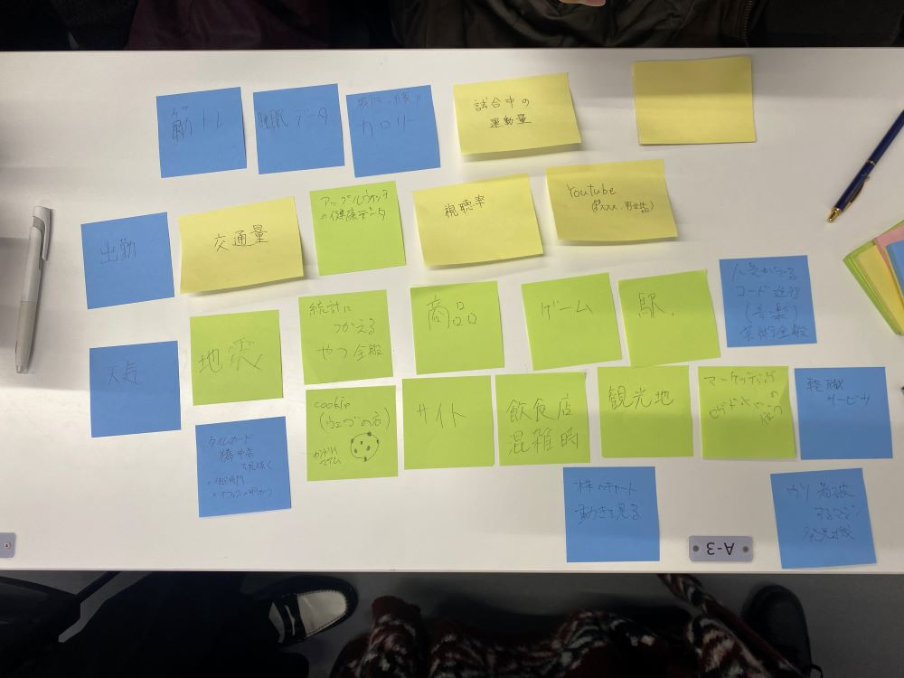

第3回デザイン演習
IoT(データ保存)で何ができそうか？どのようなデータを保存していくと価値あるものになるか？グループワークした内容（ポストイット画像）

僕たちの班で出たアイデアは主に3つに分けられると考える。
環境に関すること。（例 台風、地震の頻度、被害）
人の体に関すること。（例 消費カロリー、摂取カロリー、睡眠）
人の行き来に関すること (例 観光地、飲食店の混雑時、売上、人気商品)
データ化することで、これからについて予想や計画を立てることができる。